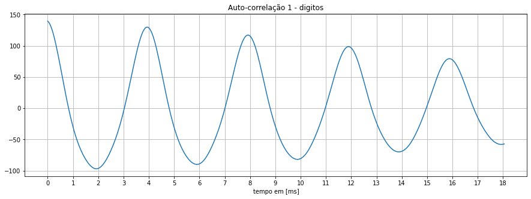

Dígitos
Contorno de energia, espectograma, pitch, f0 e formantes para o áudio com dígitos.
- Pitch: 4ms;
- Fundamental (f0): 250Hz;
- Formante f1: ~250Hz;
- Formante f2: ~510Hz;
- Formante f3: ~740Hz;
- Formante f4: ~1050Hz;

Voz falada
Contorno de energia, espectograma, pitch, f0 e formantes para o áudio com voz falada (trecho Burrinho da P2a).
- Pitch: 1,5ms;
- Fundamental (f0): ~666,7Hz;
- Formante f1: ~210Hz;
- Formante f2: ~440Hz;
- Formante f3: ~650Hz;
- Formante f4: ~880Hz;
Poema
Contorno de energia, espectograma, pitch, f0 e formantes para o áudio com poema (trecho Camoes da P2a).
- Pitch: 3,8ms;
- Fundamental (f0): 263,2Hz;
- Formante f1: ~260Hz;
- Formante f2: ~520Hz;
- Formante f3: ~800Hz;
- Formante f4: ~1050Hz;
Fonemas plosivos
Forma de onda e espectrograma para alguns fonemas plosivos do áudio Burrinho.